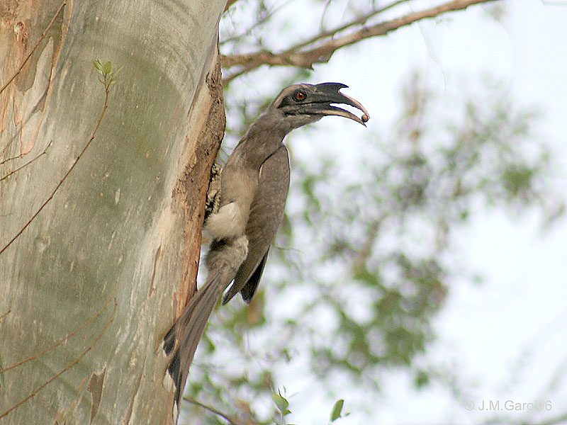

धनेशIndian Grey Hornbill
Ocyceros birostris · Bucerotidae · BRD-0072

- Scientific name
- Ocyceros birostris (Scopoli, 1786)
- Family
- Bucerotidae
- Hindi
- धनेश
- Status here
- native
- IUCN
- LC
When to look कब देखें
Present all year.
धनेश / Indian Grey Hornbill
Ocyceros birostris (Scopoli, 1786) — Bucerotidae
धनेश (भारतीय धूसर धनेश / चलोत्र) — पूर्वी उत्तर प्रदेश के कृषि मैदानों, पुराने बागों और सड़कों के किनारे लगे बरगद तथा पीपल के पुराने पेड़ों पर पाया जाने वाला एक बड़ा, विशिष्ट और वृक्षवासी (arboreal) पक्षी है। यह इस क्षेत्र में पाया जाने वाला एकमात्र धनेश (hornbill) है। इसका शरीर मटमैला भूरा-स्लेटी होता है और इसकी सबसे बड़ी पहचान इसकी लंबी, नीचे की ओर मुड़ी हुई भारी चोंच है जिसके ऊपर एक सींग जैसा नुकीला मुकुट (pointed casque) बना होता है, जो नर पक्षियों में बड़ा होता है। उड़ान भरते समय यह एक विशेष लय (flap-and-glide sequence) में उड़ता है—पहले कुछ बार पंख फड़फड़ाता है और फिर पंखों को फैलाकर हवा में तैरता है। इसकी प्रजनन प्रणाली अत्यंत विस्मयकारी है; मादा पक्षी अंडे देने के लिए पेड़ के कोटर (cavity) के भीतर जाती है और अपने मलमूत्र तथा मिट्टी की मदद से कोटर का दरवाज़ा बंद कर लेती है, जिसमें केवल एक पतली झिरी (tiny slit) छोड़ी जाती है। नर पक्षी हफ्तों तक इस झिरी के माध्यम से मादा और बच्चों को भोजन पहुँचाता है।
Quick Identification त्वरित पहचान
| Feature | Description |
|---|---|
| Size | Large bird (50–60 cm total length) with a long tail and a massive curved bill |
| Casque | A prominent, pointed, horn-like growth (casque) on top of the upper bill, blackish-grey |
| Colouration | Uniform brownish-grey overall; pale grey neck and underparts; dark primary feathers |
| Tail Pattern | Long, graduated tail; grey with a black band near the end and broad white tips |
| Flight | Distinctive undulating flap-and-glide sequence; wings make a rustling sound in flight |
| Behaviour | Strictly arboreal; moves actively in the canopy of mature fruiting trees |
Field tip: Look in mature Banyan or Peepal trees along village roads. Watch for a large, grey, long-tailed bird with a massive curved beak flying between trees in a series of flaps and glides. Listen for their loud, high-pitched squealing calls. The female has a smaller casque and is shown in the field tip.
Morphology आकारिकी
Biometrics (typical measurements in the northern Indian plains showing sexual size dimorphism in bill and casque):
| Measurement | Range |
|---|---|
| Total length | 500–600 mm |
| Wing (flattened chord) | 200–230 mm |
| Tail | 250–300 mm |
| Tarsus | 42–48 mm |
| Bill (culmen including casque) | 100–125 mm (Male bill and casque are larger than the female's) |
| Weight | 350–450 g |
Plumage: The body plumage is primarily brownish-grey, with the neck and breast being paler ash-grey. The belly is white or pale cream. The head is dark grey, with a narrow whitish superciliary band. The primary flight feathers are dark grey-brown, tipped with white. The tail is long, graduated, and grey, with a broad black subterminal band and prominent white tips on all except the central pair of tail feathers.
Bare parts: The bill and casque are blackish-grey, with yellow patches at the tip of the bill and the base of the lower mandible in females. The casque is high, pointed, and projects forward in males. The irises are red-brown in males, and brown in females. The bare skin around the eye is blackish. The legs and feet are dark grey.
Vocalisations
Indian Grey Hornbills are very vocal, especially when feeding in groups.
- Flock / Squeal call: A loud, high-pitched, piping squeal: k-k-k-k-khee-khee-khee, resembling the call of a kite, repeated continuously as they move through the canopy.
- Contact call: A shorter, grunting krruk or kek, produced when taking off from a branch.
Behaviour & Ecology व्यवहार और पारिस्थितिकी
- Arboreal feeding: Moves actively in the canopy of mature trees, hopping from branch to branch. It is a specialized frugivore, particularly fond of wild figs. It plucks the fruit with the tip of its bill, tosses it into the air, and swallows it whole.
- Flap-and-glide flight: Flies with a characteristic undulating flight. It flaps its wings rapidly 3–4 times to gain height, then glides downward with wings held flat, before flapping again.
- Symbiotic seed dispersal: Since it swallows large wild figs whole, its digestive system removes the pulp while leaving the seeds intact. The seeds are dispersed over wide areas in its droppings, helping propagate Banyan (Ficus benghalensis) and Peepal (Ficus religiosa) trees.
Life Cycle / Phenology जीवन चक्र
- Breeding season: March to June in UP, during the dry summer months when hollows are dry.
- Unbelievable nesting biology: The pair selects a natural tree cavity. The female enters the cavity and seals the entrance using her own droppings, mud, and fruit pulp brought by the male.
- Nesting slit: She leaves only a tiny vertical slit. She sheds her flight feathers (moults) inside the nest. The male brings figs, berries, and insects, feeding her through the slit for 40–50 days.
- Emergence: Once the chicks are half-grown, the female breaks the seal, emerges, and helps the male feed the young. The chicks reseal the entrance and remain inside until ready to fledge.
- Clutch size: 2 to 3 white, oval eggs.
- Fledging: The young fledge in about 45–50 days from hatching.
Host Plants or Prey आहार
Primary food items:
- Figs & Fruits: Wild figs of Banyan and Peepal; fruits of Neem, Jamun, and Amaltas (Cassia fistula).
- Animal prey: Large insects (beetles, locusts, mantises), small lizards, and occasionally garden lizard hatchlings, which are fed to the female and chicks during nesting for protein.
Predators / Natural Enemies शत्रु
- Raptors: Large eagles (like Bonelli's Eagle) prey on adult hornbills during flight.
- Mammals: Common Palm Civets (Paradoxurus hermaphroditus) and tree cats try to raid nesting cavities if they can break the mud seal.
- Reptiles: Large monitor lizards (Varanus bengalensis) search tree cavities for nests.
Agricultural / Human Relevance कृषि प्रासंगिकता
Forester of the countryside. The Indian Grey Hornbill is the most important seed disperser of native wild fig trees, which are critical keystone species in the rural ecosystem. Without hornbills, the natural regeneration of Banyan and Peepal trees drops significantly.
Conservation and legal status: Protected under Schedule IV of the Wildlife Protection Act, 1972. Major threats in Basti include the felling of old hollow trees (like Peepal and Mango) for road widening and wood, and local poaching.
Expected Locally स्थानीय रूप से अपेक्षित
Not a field record. Written from published accounts for eastern Uttar Pradesh. No confirmed local sighting yet — if you have seen it, that is what the atlas needs.
अभी तक स्थानीय पुष्टि नहीं। यह विवरण प्रकाशित स्रोतों से है, किसी अवलोकन से नहीं।
A common resident throughout the Basti district. They are regularly observed in the mature Peepal and Mango groves bordering villages in the Harraiya, Vikramjot, and Basti blocks. Their loud squealing calls are a regular sound in rural avenue plantations along major roads in the district.
Distribution वितरण
Global range: Endemic to the Indian Subcontinent (India, Pakistan, Nepal, Bangladesh).
In India: A widespread resident throughout the plains and foothills, up to 1,000 metres.
In Uttar Pradesh: A common resident state-wide in all agricultural plains with mature trees.
In Basti district / eastern UP: Regularly recorded year-round in all blocks near mature trees and orchards.
Research Questions शोध प्रश्न
Anyone can investigate these | कोई भी इन प्रश्नों की जाँच कर सकता है
- How many times per day does the male hornbill visit the nest cavity to feed the walled-in female? — Monitor and record feeding frequencies.
- What is the preference of Hornbills for nesting in Mango trees versus Peepal trees in Basti? / धनेश बस्ती में घोंसला बनाने के लिए आम के पेड़ों और पीपल के पेड़ों में से किसे अधिक प्राथमिकता देता है? — Survey and map nesting cavities.
- What is the ratio of figs to animal prey brought by the male hornbill during the nesting period? — Document food items brought to the nest slit.
- How far does a seed of a Banyan tree travel from the parent tree when dispersed by a Hornbill? — Track flight paths of feeding birds.
- Does the felling of old avenue trees along roads reduce the local population of Hornbills in Basti? / क्या सड़कों के किनारे पुराने पेड़ों की कटाई से बस्ती में धनेश की स्थानीय आबादी पर प्रभाव पड़ता है? — Conduct comparative population counts.
Similar Species मिलती-जुलती प्रजातियाँ
| Species | How to tell apart | हिंदी |
|---|---|---|
| Black Drongo (Dicrurus adsimilis / related) | Much smaller (28 cm); entirely black body; deeply forked tail; lacks curved bill and casque | भुजंगा — छोटा आकार, काला रंग, दो-मुँही पूँछ |
| House Crow (Corvus splendens) | Smaller (40 cm); black-and-grey body; straight thick bill; lacks casque and long graduated tail | घरेलू कौआ — छोटा आकार, कलगी/मुकुट का अभाव |
| Greater Coucal (Centropus sinensis) | Smaller (48 cm); gloss-black body with bright chestnut wings; red eyes; lacks casque | महोख — छोटा आकार, कत्थई पंख, लाल आँखें, मुकुट का अभाव |
Field rule: Large grey-brown bird with a long tail, distinctive flap-and-glide flight, and a massive curved bill topped by a pointed casque, moving in the canopy of mature trees, is an Indian Grey Hornbill.
Taxonomy & Classification वर्गीकरण
Original description. Giovanni Antonio Scopoli described the Indian Grey Hornbill as Buceros birostris in 1786 in his Deliciae Florae et Faunae Insubricae (Part 2, p. 104). The type locality was Coromandel, India. The genus Ocyceros was introduced by Hume in 1873. The genus name Ocyceros is derived from the Greek okus (swift) and keras (horn), referencing its flight and bill casque. The specific name birostris is Latin for two-beaked, referring to the casque which looks like a second beak.
Subspecies. Monotypic — no subspecies are currently recognised.
Family and order placement. Placed in the order Bucerotiformes, family Bucerotidae (hornbills).
Phylogenetic notes. Ocyceros birostris belongs to a genus of small Asian hornbills, being the most adapted species to dry, open agricultural landscapes compared to forest hornbills.
IUCN status rationale. Listed as Least Concern (LC) due to its large range and stable population, showing high tolerance to human-altered agricultural landscapes with mature trees.
Photo Gallery फोटो गैलरी
References संदर्भ
- Scopoli, G. A. (1786). Deliciae Florae et Faunae Insubricae. Part 2, p. 104. Ticini. [original description]
- Ali, S. & Ripley, S. D. (1999). Handbook of the Birds of India and Pakistan. Vol. 4. Oxford University Press, New Delhi.
- Grimmett, R., Inskipp, C. & Inskipp, T. (2011). Birds of the Indian Subcontinent. 2nd ed. Christopher Helm, London.
- Kemp, A. C. (1995). The Hornbills: Bucerotidae. Oxford University Press, Oxford.
- BirdLife International (2024). Ocyceros birostris. IUCN Red List of Threatened Species. Ver. 2024.
- GBIF Occurrence Data — Ocyceros birostris, Uttar Pradesh (2010–2025).
Source file: species/fauna/birds/indian_grey_hornbill.md